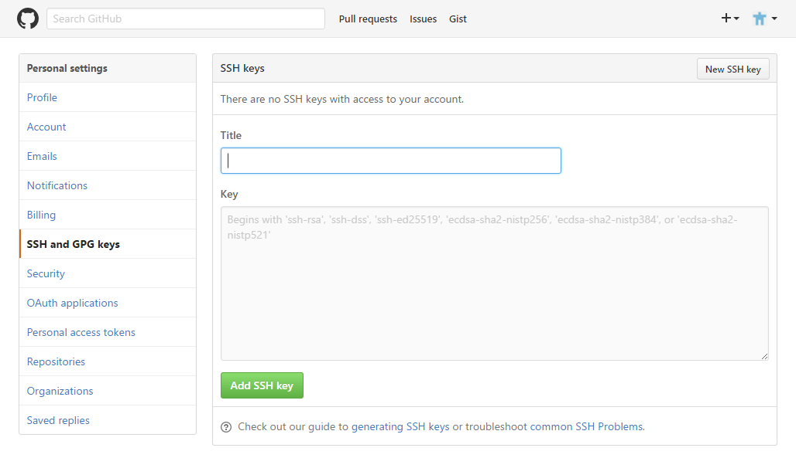

SSH 連線設定
此篇主要在說明如何『不使用密碼』的方式與 GitHub 連線。筆者對於有關 SSH 的其它優點並不曉得，所以若不需此功能則可跳過此篇文章。
連線方式
在使用 git clone 下載時有注意到 Git 的連線方式嗎？分為：
- HTTP 連線：
https://github.com/<git 檔案路徑>.git - SSH 連線：
git@github.com:<git 檔案路徑>.git
設定 SSH 連線有兩步驟： 1. 設定金鑰； 2. 連線方式，二者缺一不可。如果一開始不是選擇 SSH 連線的方式也無需重新下載，只要從 remote 設定即可。
git remote remove origin
git remote add origin git@github.com:<git 檔案路徑>.git
設定金鑰
新增 SSH 金鑰
使用 ssh-keygen 指令：
$ ssh-keygen -t rsa -C <電子信箱>
# 預設將在 ~/.ssh 路徑新增 id_rsa、id_rsa.pub 私鑰、公鑰兩個檔案。
$ ssh-keygen -t rsa -f <金鑰名稱> -C <電子信箱>
# -f： 自定金鑰名稱。
演示：
# 在 ~/.ssh/
$ ssh-keygen -t rsa -C <電子信箱>
Enter passphrase (empty for no passphrase): [Type a passphrase]
Enter same passphrase again: [Type passphrase again]
# passphrase 為使用 SSH 金鑰的密碼，但就是想要不輸入密碼所以這留白就好。
Github 設定
複製公鑰訊息： （「<名稱>.pub」的才是公鑰）
# clip 指令可將檔案內容複製至剪貼簿
$ clip < <檔案路徑>
Github 路徑： account > setting > SSH and GPG Keys

在點選「New SSH key」按鈕，設定填寫後並確認 Github 密碼就完成了。
連線測試
$ ssh -T <主機名稱>
$ ssh -vT <主機名稱>
# -v： 輸出連線訊息。
管理多組金鑰
建立 ~/.ssh/config 檔案來管理 SSH 金鑰所對應的網站。
更改權限：
$ chmod 644 ~/.ssh/config
$ la
drwx------+ 1 chmiz None 0 七月 13 07:19 ./
drwxrwxr-x+ 1 chmiz None 0 七月 13 07:19 ../
-rw-r--r--+ 1 chmiz None 305 七月 13 08:10 config
#----w--w-+ <= 有這兩個會無法使用
config 設定格式：
# 提示註解
Host <自訂遠端主機的別名>
HostName <遠端主機名稱>
IdentityFile ~/.ssh/<金鑰名稱>
連線測試：
$ ssh -T <自訂遠端主機的別名>